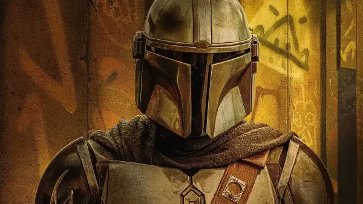

El Mandaloriano (Pedro Pascal)
Interpretado por José Pedro Balmaceda Pascal,
es un actor de teatro, televisión, cine, voz y director teatral chileno
estadounidense.
Es conocido por interpretar al príncipe Oberyn Martell en la serie de televisión Game
of Thrones, a Javier Peña en Narcos de Netflix; a el Mandaloriano en la serie The Mandalorian,
y por la serie The Last of Us de HBO, donde interpreta al protagonista Joel Miller.